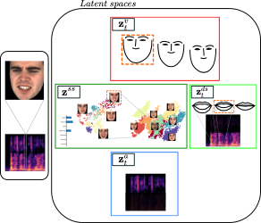

A Multimodal Dynamical Variational Autoencoder for Audiovisual Speech Representation Learning
Samir Sadok1 Simon Leglaive1 Laurent Girin2 Xavier Alameda-Pineda3 Renaud Séguier1
1CentraleSupélec, IETR UMR CNRS 6164, France
2Univ. Grenoble Alpes, CNRS, Grenoble-INP, GIPSA-lab, France
3Inria, Univ. Grenoble Alpes, CNRS, LJK, France
| Controlling and understanding the latent space of a multimodal generative model is a current challenge to perform analysis and to have a meaningful representation improving auxiliary tasks such as emotion classification. We have developed dynamical multimodal VAE (MDVAE), a double hierarchical generative model: at the temporal level (static and dynamical) and the modality level (specific and shared). This latent space disentanglement is adequate for very heterogeneous data where the temporal dimension is present. Trained on an audio-visual database, MDVAE can dissociate lip configuration from other visual information (such as eye movement) in different spaces. MDVAE can also separate static global information such as the physical description of the face or emotions from dynamical information such as the movement of the head or the eyes. We show that our method is generalizable to multimodal data other than audio-visual. |  |
The VAE has been extended in many ways, including for dealing with data that are either multimodal or dynamical (i.e., sequential), but not both at the same time. This paper proposes an approach to combine these two extensions in order to process simultaneously multimodal data and sequential data (e.g., audio-visual data). To our knowledge, it is the first generative model that considers the inputs' multimodality and their dynamical aspects. Our goal is to have a hierarchical latent space, one in the temporal perspective to dissociate static information from dynamical information and another in the modality perspective to separate common information from specific information for each modality.
Two significant contributions are implemented in our studies:- Representation of heterogeneous multimodal data by low-dimensional latent spaces learned in an unsupervised way: a latent dynamical space specific to each modality, taking into account temporal dependencies. Another latent dynamical space but this time shared by the modalities. And finally, a latent static space to encode the global and temporally independent information. Trained on an audio-visual database, we experimentally show that the MDVAE manages to dissociate the dynamical information from the global static information while factoring it into shared and modality-specific latent spaces.
- Improvement of the data reconstruction quality by training MDVAE in two steps: the first step consists in learning VQ-VAE independently for each modality without the temporal aspect. Moreover, the second step consists in learning the MDVAE, whose inputs are the intermediate representations of the VQ-VAE before quantization. The temporal disentanglement and the modalities' disentanglement occur in this second stage.

|

|
We will present qualitative results obtained by reconstructing an audiovisual speech sequence using some of the latent variables from another sequence.
For visual representation:
|
We transfer \(\mathbf{z}^{(v)}\) from the central sequence in red to the surrounding sequences. 
Only head and eye movements are transfered. |
We transfer \(\mathbf{z}^{(av)}\) from the central sequence in red to the surrounding sequences. 
Only lip movements are transfered. |
We transfer \(\mathbf{z}^{(v)}\) and \(\mathbf{z}^{(av)}\) from the central sequence in red to the surrounding sequences. 
All dynamical factors are transfered. |